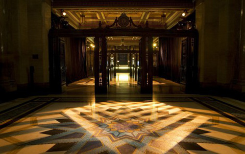
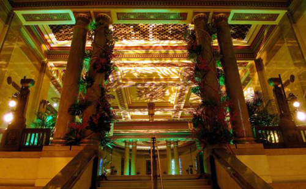
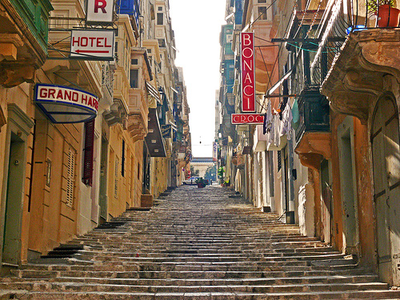
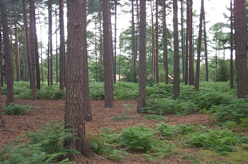

Freemasons' Hall in Covent Garden used as the Tokatlian Hotel. An interesting interior view unlike those used in The Adventure of the Western Star, How Does Your Garden Grow?, One, Two, Buckle My Shoe and Mrs McGinty's Dead.

The grand staircase in Freemason's Hall.

St Ursula Street in Valetta, Malta is used as a street in Istanbul where Poirot witnesses the stoning.

Much of this episode was filmed on set at Pinewood Studios. The snowy exterior scenes in the woods were filmed in nearby Black Park Country Park.